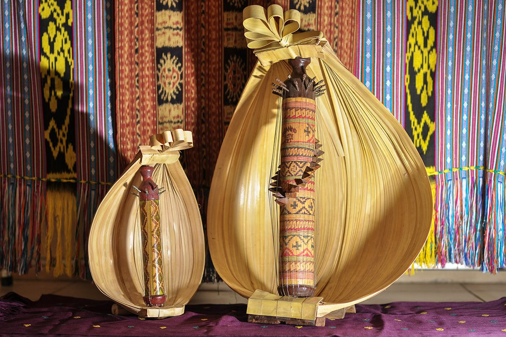

Selamat Datang
Kalau ditanya alat musik tradisional, kebanyakan orang pasti langsung menyebut angklung atau gamelan. Padahal Indonesia punya banyak alat musik daerah lain yang tidak kalah unik, tetapi namanya jarang terdengar.
Website ini mengajak kamu berkenalan dengan tiga di antaranya: sasando, kolintang, dan talempong.

Alat Musik yang Dibahas
Daftar Singkat
- Sasando dari Nusa Tenggara Timur
- Kolintang dari Sulawesi Utara
- Talempong dari Sumatera Barat
Pembahasan lengkapnya ada di halaman Artikel. Kalau ada alat musik daerah lain yang ingin kamu kenalkan, kirim usulanmu lewat halaman Kontak.